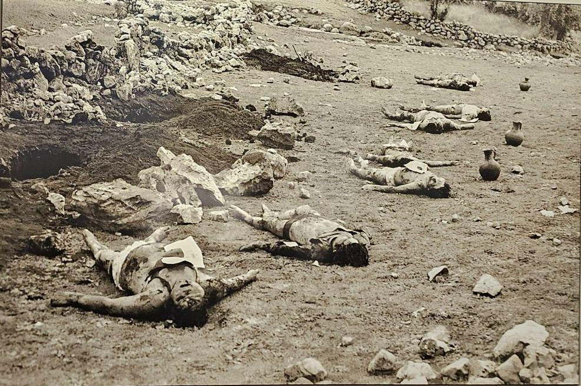

Opinión
Cuando las imágenes hablan: el poder de la fotografía para mantener viva la memoria
Por Stacey VaronaMartes 3 de noviembre de 2026
La fotografía tiene la capacidad de comunicar historias, despertar emociones y acercarnos a realidades que muchas veces desconocemos. Esto se evidencia en Yuyanapaq, una exposición fotográfica que recoge testimonios visuales del periodo de violencia que vivió el Perú entre 1980 y 2000. A través de sus imágenes, la exposición nos permite conocer no solo los acontecimientos de aquella época, sino también las experiencias humanas que quedaron marcadas por el dolor, la pérdida y la resistencia. De esta manera, cada fotografía se convierte en una forma de preservar la memoria y transmitirla a quienes no vivieron aquellos años.
El lenguaje visual detrás de cada fotografía
Durante el recorrido por Yuyanapaq, resulta llamativa la manera en que las fotografías utilizan distintos recursos visuales para transmitir sus mensajes. Los encuadres cerrados, centrados en los rostros, las miradas y las manos de las personas, permiten apreciar sus expresiones y concentrar la atención en sus emociones. Por otro lado, los planos abiertos muestran escenarios de destrucción, abandono y desplazamiento, permitiendo comprender la magnitud de lo ocurrido.

Asimismo, la perspectiva influye en la conexión que se establece con las imágenes. Las fotografías tomadas de frente o a la altura de los ojos generan una sensación de cercanía con los protagonistas, como si el espectador estuviera compartiendo ese momento con ellos. A esto se suma el uso del blanco y negro en gran parte de la muestra, que resalta los contrastes, las expresiones y los detalles de cada escena, reforzando la intensidad visual de los acontecimientos representados.

Emociones que trascienden las palabras
Una de las principales fortalezas de las fotografías de Yuyanapaq es su capacidad para transmitir emociones sin necesidad de explicaciones extensas. Una mirada de tristeza, un rostro cansado, el dolor de una familia o el caos de una escena pueden comunicar sentimientos difíciles de expresar únicamente con palabras.

Estas imágenes transmiten angustia, tristeza, incertidumbre, pero también dignidad y resistencia. Su fuerza está en permitir que el espectador interprete lo que observa y establezca una conexión emocional con las personas retratadas. Así, la fotografía deja de ser únicamente un registro de un acontecimiento y se convierte en un medio que acerca al público a las experiencias humanas que forman parte de nuestra historia.
La importancia de Yuyanapaq para las nuevas generaciones
Para nosotros, las nuevas generaciones que no vivimos esa etapa de cerca, ver esta exposición fotográfica es clave. Nos permite entender de una manera más humana y visual lo que pasó en el Perú, recordándonos que la memoria histórica no es solo un tema de libros, sino algo que debemos tener presente para cuidar nuestros derechos y evitar que se repita.

◆